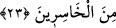

ağır gelmiştir.
Ayetteki “şeytan size apaçık düşmandır, demedim mi?” ifadesi, Allah Teâlâ’nın şu
buyruğuna işarettir: “Ey Âdem, bu (İblis), senin ve eşinin düşmanıdır. Sakın sizi
cennetten çıkarmasın, sonra sıkıntı çekersin.” (et-Taha, 20/117)
Rivayet edilir ki Allah Teâlâ Âdem (a.s.)’a: “Ben sana cennetteki bu yasak ağacın
dışındaki ağaçların meyvelerini bol bol bağışlamadım mı, niçin bu yasak ağaca
yöneldin?” buyurmuştur. Âdem (a.s.) ise: “İzzetine yemin olsun ki, bağışladın. Ancak
ben, senin yarattıklarından birinin senin yüce adını anarak yalan yere yemin
edebileceğine hiç ihtimal vermiyordum.” diye cevap verdi. Allah Teâlâ: “İzzetime
yemin olsun ki seni yeryüzüne indireceğim. Orada meşakkatle geçimini temin
edeceksin.” buyurdu. Sonra onu yeryüzüne indirdi. Ona demircilik sanatını öğretti. Ona
ekip dikmesini emretti. Hz. Âdem toprağa ekti, suladı, hasat etti, öğüttü savurdu, hamur
ve ekmek yaptı.
23. (Âdem ile eşi) dediler ki: Ey Rabbimiz! Biz kendimize zulmettik. Eğer bizi
bağışlamaz ve bize acımazsan mutlaka ziyan edenlerden oluruz.
Âdem ve Havvâ hatalarını itiraf edip derhal tevbeye teşebbüs ederek “Ey Rabb’imiz
biz nefsimize zulmettik.” Günah işleyerek kendimize zarar verdik. Böylelikle kendimizi
cennetten çıkarılmaya maruz bıraktık. “eğer bizi bağışlamaz” günahlarımızı örtmez
“ve” tevbemizi kabul etmeyerek “bize acımazsan muhakkak ziyana uğrayanlardan
oluruz.” bir anlık hazza aldanarak ahiretini mahvedenlerden, helâk olanlardan oluruz.
“dediler.”
Ayet, eğer affedilmezse küçük günahların da mutlaka cezalandırılacağına delâlet eder.
Bunların bağışlanıp bağışlanmayacağı da şüphelidir. Âdem (a.s.)’ın hatası da küçük
günahlardandı. Çünkü o, ağaçtan Allah Teâlâ’nın hükmüne muhalefet etmek kasdıyla
yememişti. Bilakis şeytanın yeminlerine ve türlü sözlerine inandığı için yemişti. Çünkü
o sözler, Âdem (a.s.) da tabiî meyli, isteği doğurmuştu.
Ayrıca Âdem (a.s.) Allah’ın hükmüne riayet etmek için kendisini ağaçtan uzak
tutmuştu. Nihayet bunu unutup onu yemekten alıkoyan mani kalmayınca beşerî arzuları
kendisini ona meylettirmiştir.
Yine Âdem (a.s.)’ı bu hatayı işlemeye sevk eden bir başka sebep de onun hatalı
ictihadı olmuştur. Âdem (a.s.) ağaçla ilgili yasağın tenzîh için olduğunu veya Allah’ın
“şu ağaca yaklaşmayın” emriyle bizzat o ağaca işaret edildiğini zannetmiştir. Bu
yüzden de o türden başka bir ağaçtan yemiştir. Halbuki buradaki yasakla o ağacın
cinsine işaret edilmişti. Nitekim bu hükmün benzeri şu rivayettir: Rasûlullah (s.a.v.) bir